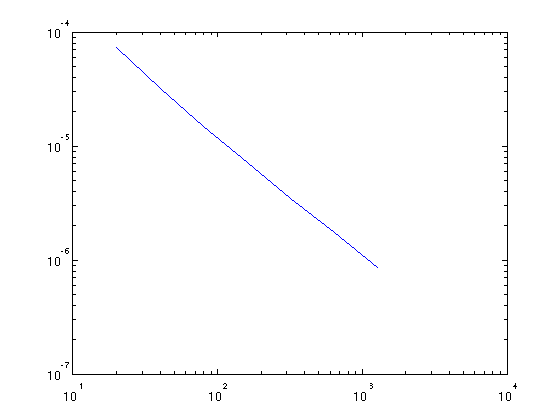
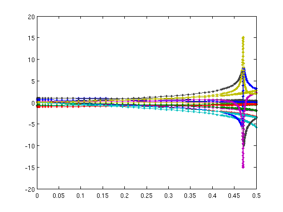

Demos of solving IVPs in matlab
Contents
Euler's method and instability
eulerode err
err = 1.0e+63 * -0.0000 -0.0000 -0.0001 -1.1511 0.0000 0.0000 0.0000
Backward Euler method
backwardeuler loglog( [20 40 80 160 320 640 1280], abs(err) )
The 5-body problem
[f,tspan,u0] = Nbody(5); % problem setup % The popular RK45 method [t,u] = ode45( f, tspan, u0 ); size(t) % time points size(u) % solution history plot(t,u,'.-') % note nonuniform time steps
ans = 129 1 ans = 129 20
A high-accuracy Adams method
[t,u] = ode113( f, [0 1.5], u0 ); length(t) plot(u(:,1:5),u(:,6:10)) axis([-1 1 -1 1])
ans =
20404